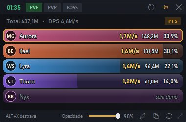

Medidor de dano para Black Desert. Uma janelinha por cima do jogo mostra o DPS, o dano total e a classe de cada pessoa da sua pt.
Baixar para Windows
Clique em Baixar, depois botão direito no .zip → Extrair tudo.
Abra o DPSMeterBDO.exe. Se o Windows avisar: Mais informações → Executar assim mesmo.
Só na 1ª vez: clique na faixa dourada "CLIQUE AQUI" e siga o instalador oficial.
Pronto! Veja na aba Como utilizar os modos, atalhos e dicas.
Os termos da Pearl Abyss proíbem programas de terceiros que leem dados do jogo. O meter é 100% passivo (não mexe no jogo, na memória nem nos arquivos e não envia nada), o que torna a detecção improvável, mas use por sua conta e risco e evite postar prints dele. Saiba mais